1. Key Findings
The analysis examined 250 homes across 8 variables. The dataset contained no missing values, allowing all observations to be considered during the analysis.
- The average home price was $479,333 , with prices ranging from $167,416 to $1,243,481 .
- The average home contained approximately 1,505 square feet .
- sqft had the strongest numerical relationship with price, with a correlation of 0.488 .
- The square-footage regression model achieved an R² score of 0.329 .
- The regression model reduced RMSE compared with the mean-price baseline by approximately 19.0% .
2. Dataset Overview
This project analyzes residential home sales data using exploratory data analysis and linear regression. The dataset contains information about home characteristics, sale prices, and satisfaction ratings.
Variables
neighborhoodproperty_typepricesqftbedroomsbathroomsyear_builtsatisfaction
Data Quality
The dataset contains no missing values, so all 250 observations were available for analysis.
| Column | Missing Values |
|---|---|
| neighborhood | 0 |
| property_type | 0 |
| price | 0 |
| sqft | 0 |
| bedrooms | 0 |
| bathrooms | 0 |
| year_built | 0 |
| satisfaction | 0 |
3. Home Price Analysis
Home prices in the dataset range from $167,416 to $1,243,481 . The average home price is $479,333 , while the median home price is $427,874 .
Comparing the mean and median helps describe the distribution of home prices. A noticeable difference between these values can indicate that higher- or lower-priced homes are influencing the overall average.
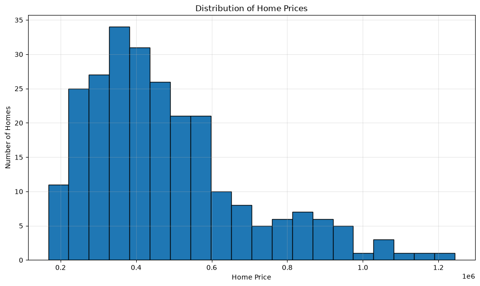
4. Square Footage Analysis
Square footage is the primary predictor used in the linear regression model. The average home contains approximately 1,505 square feet , while the median home contains approximately 1,410 square feet .
The relationship between square footage and price is examined visually before building the regression model. This provides an initial indication of whether a linear model is reasonable.
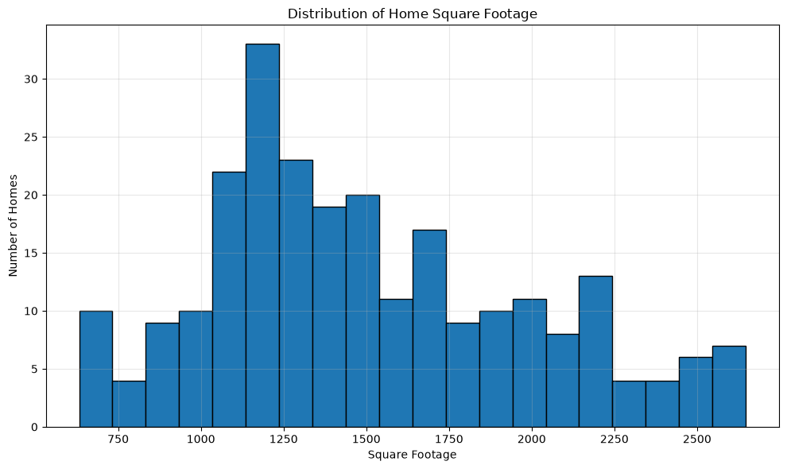
5. Exploratory Data Analysis
The following visualizations examine relationships between home characteristics and sale price. These comparisons help identify patterns that may be useful for understanding differences in home prices.
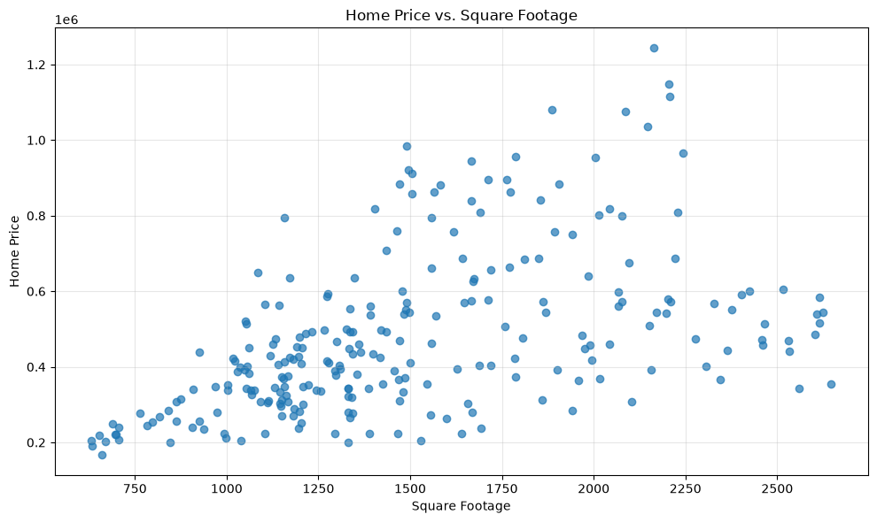
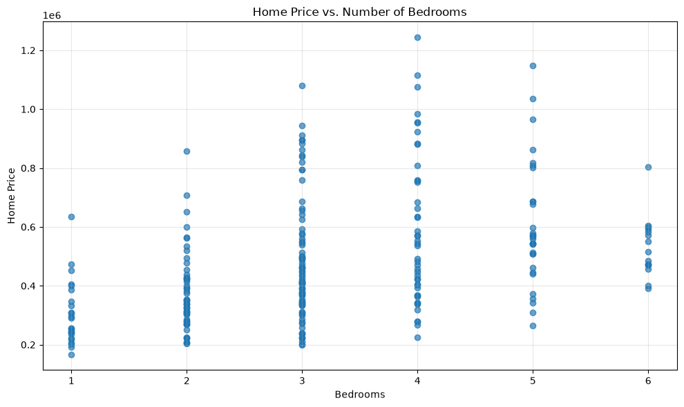
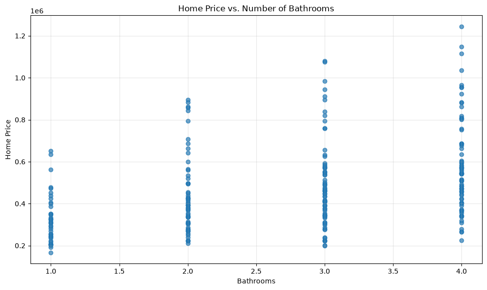
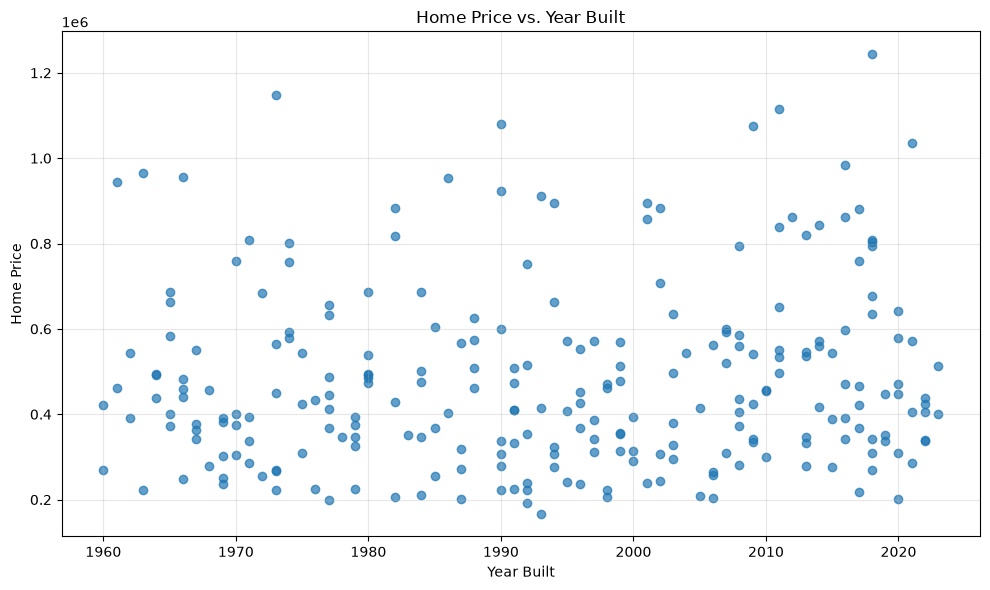
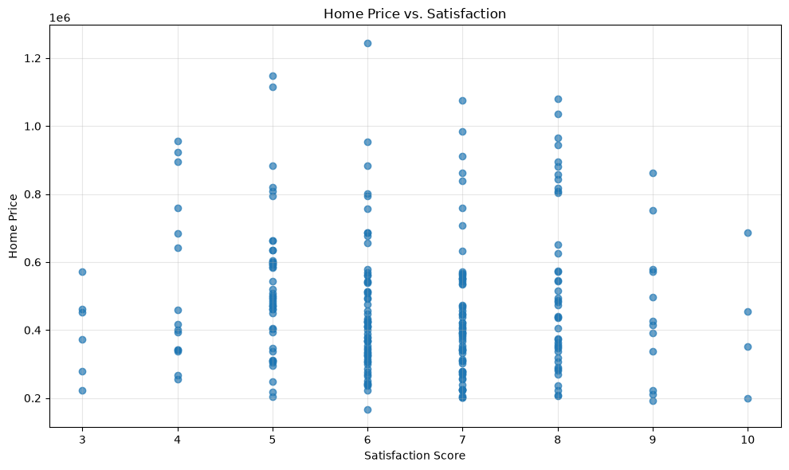
Categorical Comparisons
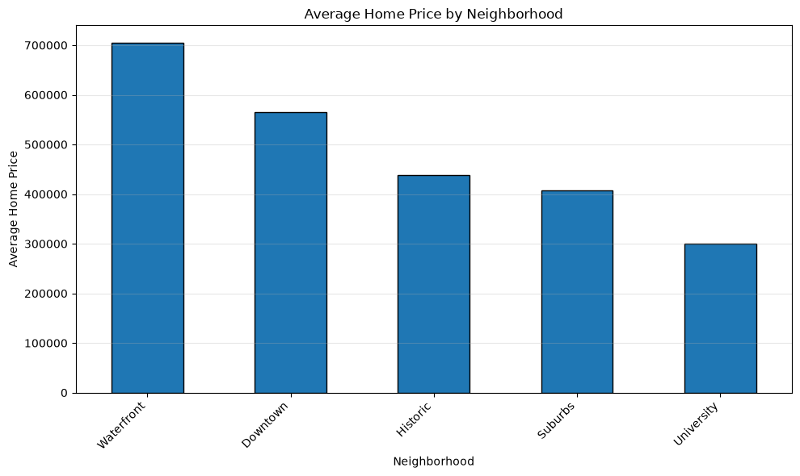
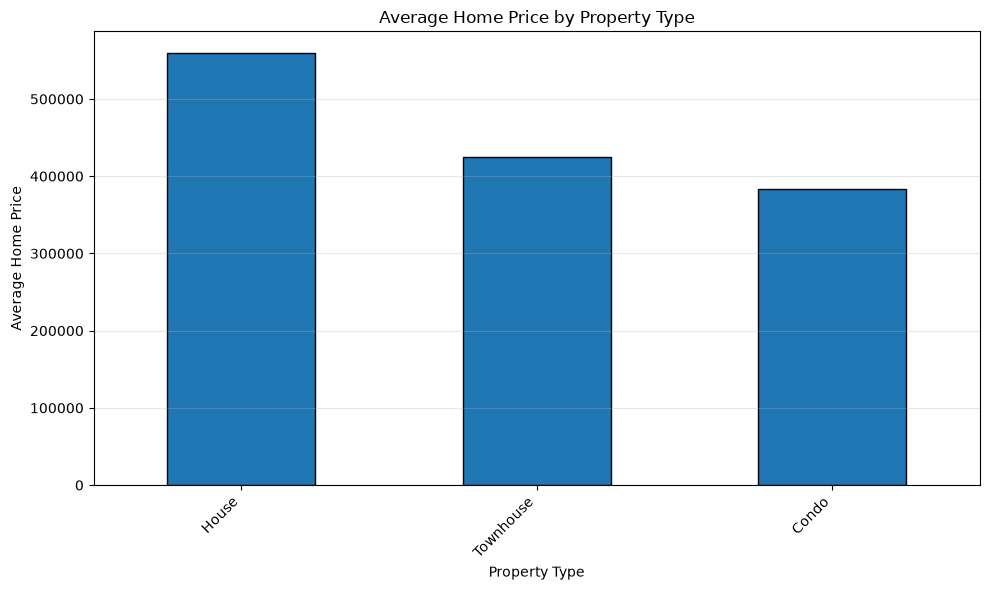
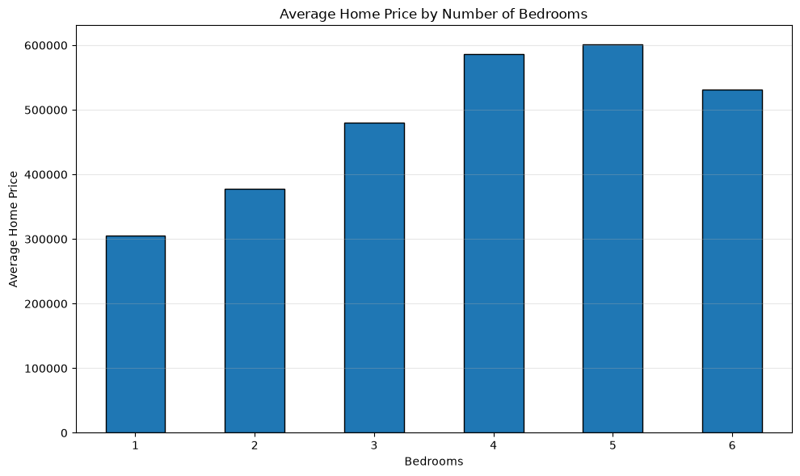
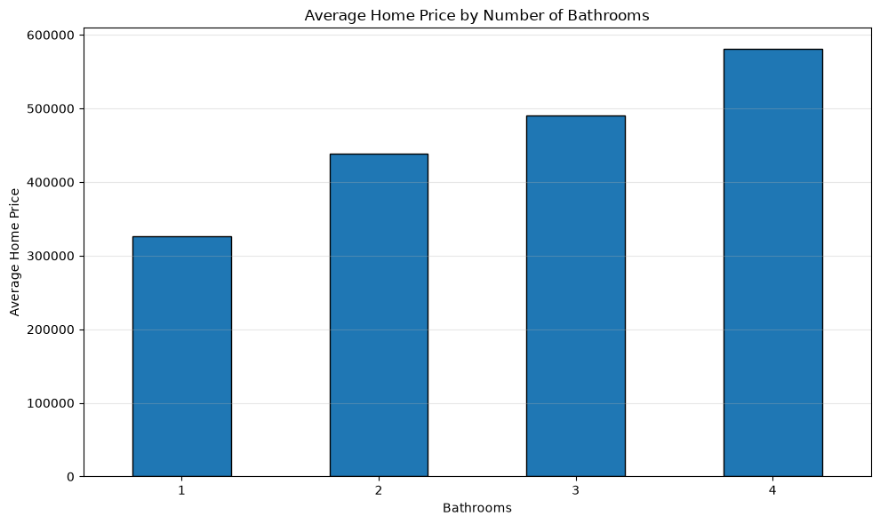
6. Correlation Analysis
Correlation measures the strength and direction of a linear relationship between numerical variables. Values closer to 1 indicate a strong positive relationship, while values closer to -1 indicate a strong negative relationship. A value near 0 indicates a weak linear relationship.
sqft has a moderate positive linear relationship with price.
| Variable | Correlation with Price |
|---|---|
| price | 1.000 |
| sqft | 0.488 |
| bedrooms | 0.402 |
| bathrooms | 0.400 |
| year_built | 0.083 |
| satisfaction | -0.034 |
Correlation Heatmap
The heatmap provides a visual summary of the relationships among the numerical variables in the dataset. Darker relationships indicate stronger positive or negative correlations.
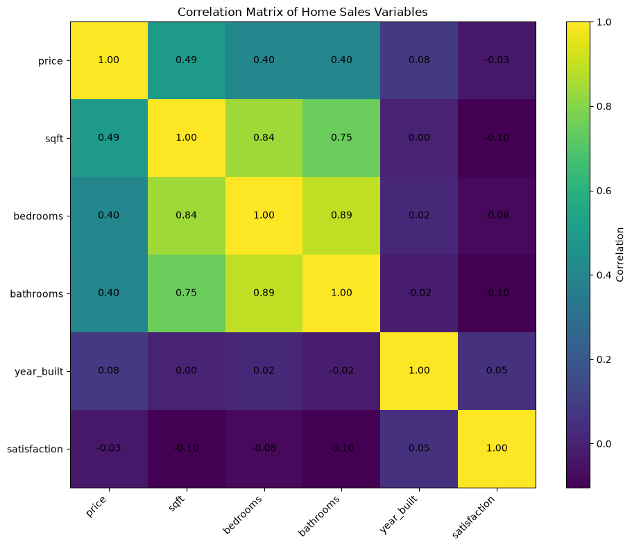
Correlation should be interpreted as a measure of association rather than causation. A strong correlation between two variables does not prove that one variable directly causes changes in the other.
7. Linear Regression
A linear regression model was developed to predict home price using square footage as the independent variable. The data was divided into training and testing sets before the model was evaluated.
price = 206.08 * sqft + 172519.48
The slope of the model is 206.08 . This means that, according to the model, an additional square foot is associated with an estimated increase of approximately $206 in home price.
The intercept is $172,519 . The intercept represents the model's predicted price when square footage is zero. Because a zero-square-foot home is not realistic, the intercept is primarily a mathematical component of the regression equation rather than a practical housing interpretation.
8. Model Evaluation
The regression model achieved an R² score of 0.329 . The model explains some variation in home prices, but substantial variation remains unexplained.
The model's RMSE is $169,595 , compared with a baseline RMSE of $209,277 . The regression improves upon the baseline by approximately 19.0% .
The baseline R² score was -0.021 , compared with the regression model's R² score of 0.329 .
9. Regression Charts
The prediction chart compares actual home prices with prices predicted by the linear regression model. Predictions closer to the diagonal reference line represent smaller prediction errors.
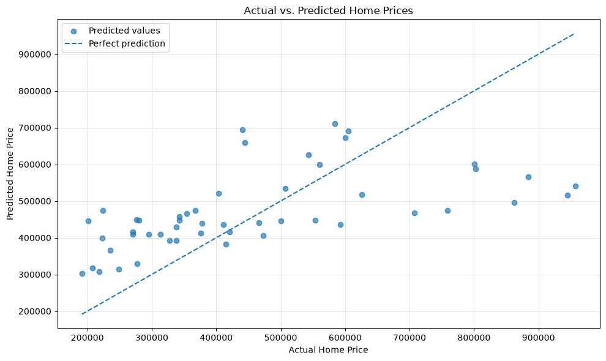
10. Residual Analysis
Residuals represent the difference between the actual home price and the price predicted by the regression model. Positive residuals indicate that the model underestimated the actual price, while negative residuals indicate that the model overestimated the actual price.
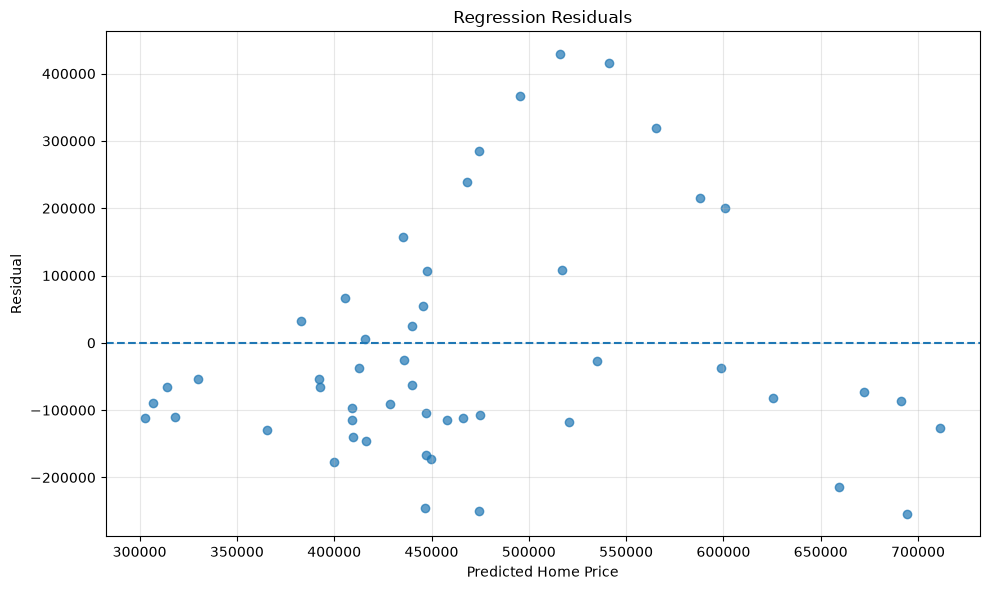
A residual pattern centered around zero is generally desirable because it indicates that the model does not consistently overpredict or underpredict prices in one direction.
11. Model Limitations
Although the regression model provides useful insight into the relationship between square footage and home price, several limitations should be considered when interpreting the results.
- The primary model uses only square footage to predict home price.
- Other characteristics such as neighborhood, property type, bedrooms, bathrooms, and year built may also influence home prices.
- The dataset contains 250 observations, which limits how broadly the results should be generalized.
- Linear regression assumes that the relationship between square footage and price can be reasonably represented by a straight line.
- Correlation does not establish causation. Relationships observed in the dataset do not prove that one characteristic directly causes changes in home price.
- Predictions outside the range of square footage represented in the dataset may be less reliable.
12. Conclusions
The analysis demonstrates a measurable relationship between square footage and home price. The linear regression model provides a useful baseline for predicting price from a single housing characteristic.
Exploratory analysis also shows that other characteristics, including bedrooms, bathrooms, neighborhood, property type, year built, and satisfaction, may contribute to differences in home prices.
The correlation analysis provides additional evidence that home price is associated with multiple numerical characteristics. However, the regression model's remaining prediction error demonstrates that square footage alone cannot fully explain differences in home prices.
Overall, the project demonstrates the use of Python, pandas, data visualization, exploratory data analysis, statistical relationships, and machine learning techniques to investigate a real-world style dataset and communicate analytical findings.